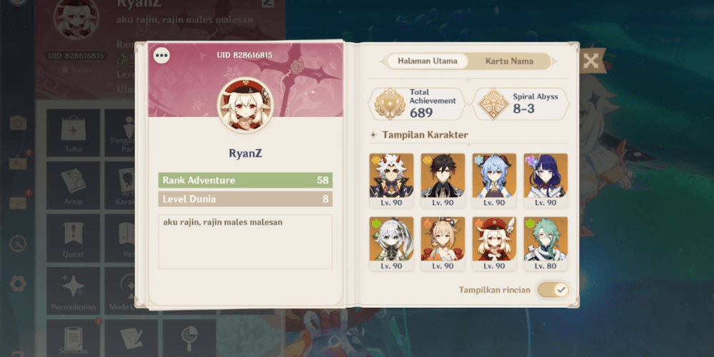
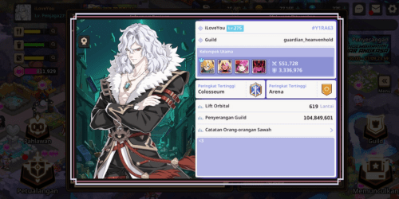
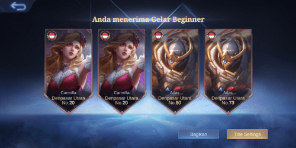
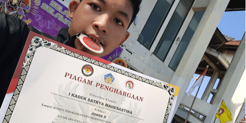

Genshin Impact adalah game bertema OpenWorld Anime yang dimana kita sebagai pendatang dari dunia lain mencari saudara kembar kita yang menghilang. Saya mengenal game Genshin Impact ini dari media entertainment seperti youtube dan dari teman-teman saya. Genshin Impact adalah game yang saya mainkan sejak 2021 hingga sekarang. Selama 2 tahun tersebut, saya sudah memiliki banyak experience dalam bermain game Genshin Impact ini.

Guardian Tales adalah salah satu game mobile yang saya gemari sekarang. Saya mengenal game ini dari youtube dan teman-teman sekolah dan mereka juga menyukai game ini. Game ini mirip seperti Genshin Impact tetapi bertema pixel dan menyelesaikan stage-stage. Namun, game ini semakin kesini semakin sepi peminatnya, mulai dari media entertainment yang mulai meninggalkan Guardian Tales, dan Game Developernya pun lambat dalam memberikan update pada game ini.

Siapa sih yang ga kenal dengan game ini. Mobile Legends atau yang biasa disingkat ML, adalah game MOBA yang bisa dimainkan di platform mobile. Mobile Legends memiliki komunitas yang sangat besar di Asia dan Indonesia adalah salah satunya. Di Mobile Legends, role dominan saya adalah roamer karena dalam party saya -1 roam. Karena itu, tidak jarang hero saya yang memiliki title yaitu tank atau support. Tetapi jika bermain solo, duo, atau trio, saya bisa bermain role apapun tidak termasuk jungler.

Karate adalah Ilmu bela diri yang menggunakan tangan kosong. Saya mengikuti karate sejak kelas 10 tepatnya pada September 2022. Saya awalnya mengikuti karate ini karena desakan orang tua yang meminta saya untuk mengikuti latihan bela diri karena saya memiliki fisik dan mental yang sangat lemah. Namun karena saya bersungguh - sungguh dalam latihan karate, saya dapat meraih medali perak di kejuaraan karate.